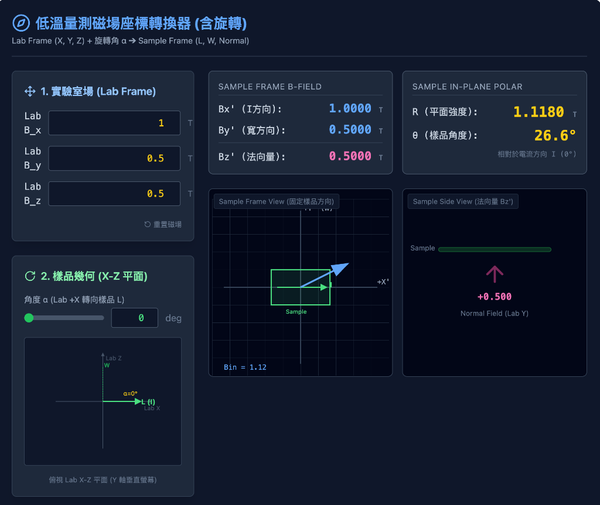
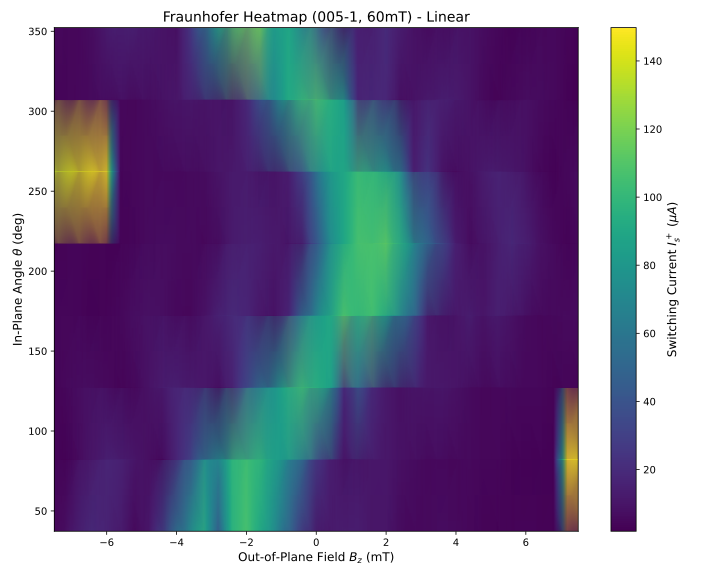
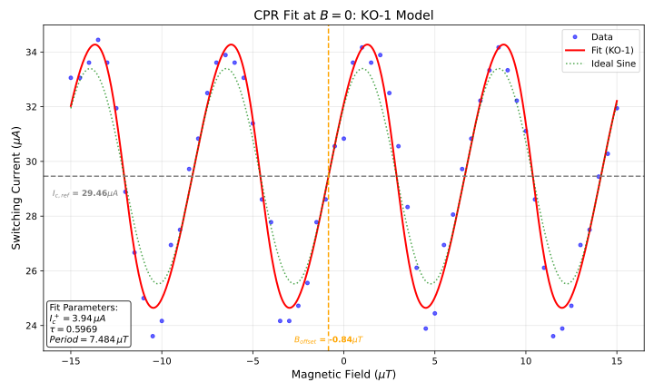
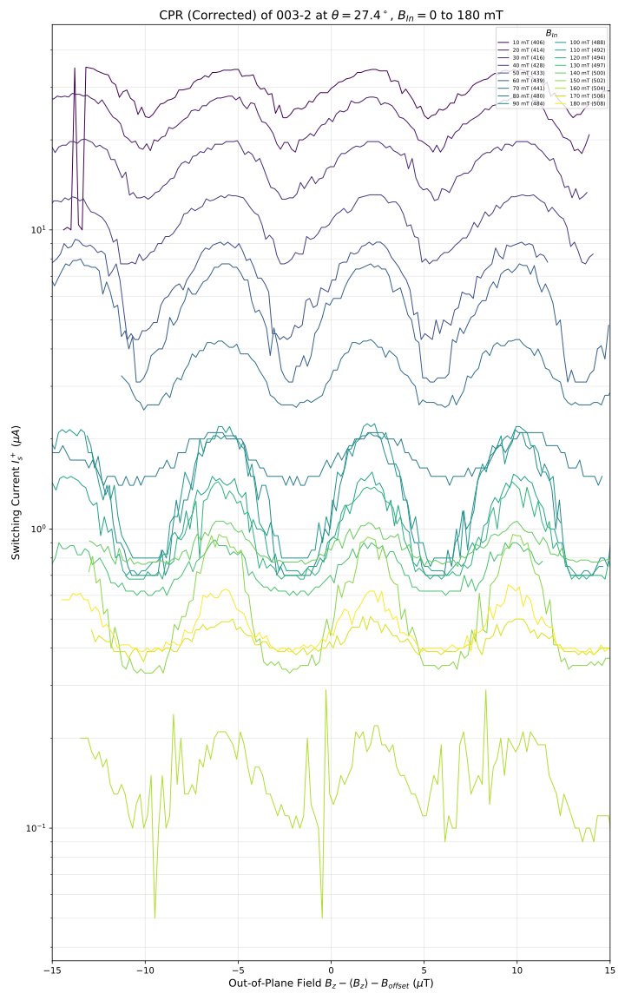

面內磁場下1T相二碲化鉑約瑟夫森接面
之電流－相位關係研究
Study of the Current–Phase Relation of a 1T-PtTe\(_2\) Josephson Junction Under an In-Plane Magnetic Field
Student: Tao-Yi Hsu (徐道宜)
Advisor: Dr. Kuei-Lin Chiu (邱奎霖 博士)
Advisor: Dr. Kuei-Lin Chiu (邱奎霖 博士)
National Sun Yat-sen University
2026-01-05
Introduction
Outline
Introduction
- Research motivation
- 1T-PtTe\(_2\) (Type-II Dirac)
Theory
- Josephson effect & CPR
- Josephson diode effect
Methods
- Device fabrication
- Measurement setup
Results
- Basic characterization
- CPR analysis
- In-plane field effect
Research Motivation
Topological SC
- Type-II Dirac semimetal PtTe\(_2\) proximitized by a superconductor
- Platform for novel quantum transport (surface/edge states)
CPR
- Direct probe of junction physics beyond simple \(\sin\phi\)
- Harmonics encode transparency / Andreev bound states
Diode Effect
- Non-reciprocal transport \(I_c^+ \neq |I_c^-|\)
- Route to dissipationless rectification & SC electronics
1T-PtTe\(_2\): A Type-II Dirac Semimetal
- Crystal Structure:
- Layered Transition Metal Dichalcogenide (TMD).
- CdI\(_2\)-type trigonal structure (\(P\bar{3}m1\)).
- Te-Pt-Te tri-layers bound by van der Waals forces.
- Electronic Properties:
- Type-II Dirac Fermions: Lorentz-invariance violating tilted Dirac cones.
- High conductivity and potential topological surface states (TSS).

Theoretical Background
Josephson Effect & Current–Phase Relation
Josephson relations
- DC: \(I_s = I_c\sin\phi\) (ideal tunnel junction)
- AC: \(\dot{\phi} = \frac{2e}{\hbar}V\)
Beyond sinusoidal CPR
- High transparency → skewed CPR
- Harmonics: \(I(\phi)=\sum_n I_n\sin(n\phi+\delta_n)\)
- Access via asymmetric SQUID readout
Josephson Diode Effect (Concept)
Definition
- Non‑reciprocal critical current
\(I_c^+ \neq |I_c^-|\) - Superconducting rectification without Joule heating
Typical ingredients
- Broken inversion symmetry + broken time‑reversal symmetry
- Often tuned by \(B_{\parallel}\) with strong spin–orbit coupling
Theoretical Model: Rashba + Zeeman
Rashba + Zeeman: Why We Care
- Platform: 2D electron system at an interface (e.g. PtTe\(_2\) surface / S–PtTe\(_2\) junction)
- Key ingredients:
- Strong spin–orbit coupling (SOC) → Rashba effect
- External magnetic field → Zeeman effect
- Combined effect:
- Generates helical spin–momentum locking + spin splitting
- Breaks inversion and time-reversal symmetries → allows finite-momentum pairing and Josephson diode effect (JDE)
Minimal 2D Model (Rashba + Zeeman)
- Momentum in plane: \(\mathbf{k} = (k_x, k_y)\)
- Spin Pauli matrices: \(\boldsymbol{\sigma} = (\sigma_x, \sigma_y, \sigma_z)\)
- Total Hamiltonian: \[ H(\mathbf{k}) = \underbrace{\frac{\hbar^2 k^2}{2m} - \mu}_{H_0} + \underbrace{\alpha_R (k_y\sigma_x - k_x\sigma_y)}_{H_R} + \underbrace{\tfrac{1}{2} g\mu_B \mathbf{B}\cdot\boldsymbol{\sigma}}_{H_Z}. \]
- We will discuss:
- \(H_0\): Free 2D electron gas
- \(H_R\): Rashba spin–orbit coupling
- \(H_Z\): Zeeman coupling to external magnetic field
Free 2D Electron Gas (\(H_0\))
- Hamiltonian: \[ H_0 = \frac{\hbar^2 k^2}{2m} - \mu,\quad k^2 = k_x^2 + k_y^2. \]
- Symmetries:
- Time-reversal symmetry (TRS): preserved
- Inversion / mirror symmetry (including \(z \to -z\)): preserved if structure is centrosymmetric
- Spin SU(2) symmetry: full spin-rotation invariance
- In-plane rotational symmetry (if effective mass isotropic): approx. preserved
- Physical picture:
- Spin-degenerate parabolic bands
- No spin–momentum locking; spin and momentum are independent
Rashba Term (\(H_R\)): Origin and Form
- Requires structural inversion asymmetry (SIA) + strong SOC
- Rashba Hamiltonian: \[ H_R = \alpha_R (\boldsymbol{\sigma}\times\mathbf{k})\cdot\hat{\mathbf{z}} = \alpha_R (k_y\sigma_x - k_x\sigma_y). \]
- Parameters:
- \(\alpha_R\): Rashba coupling strength \(\propto\) interfacial electric field \(E_z\)
- Physical effect:
- Spin–momentum locking in the plane:
- Spin lies in-plane and perpendicular to momentum
- Splits the spin-degenerate Fermi surface into two helically polarized Fermi circles
- Spin–momentum locking in the plane:
Rashba: Symmetry Breaking
- Breaks structural inversion symmetry (SIA):
- Under \(z \rightarrow -z\): interfacial electric field \(E_z\) changes sign
- Rashba coupling \(\alpha_R\) changes sign → \(H_R\) is not inversion-invariant
- Breaks full spin SU(2) symmetry:
- Spin no longer freely rotates; spin orientation is tied to momentum direction
- Only combined spin–orbital rotations may remain as approximate symmetries
- Preserves time-reversal symmetry (TRS):
- Under \(\mathcal{T}\): \(\mathbf{k} \to -\mathbf{k}\), \(\boldsymbol{\sigma} \to -\boldsymbol{\sigma}\)
- \(H_R(\mathbf{k}) \to H_R(-\mathbf{k})\) → TRS holds
- Kramers degeneracy: states at \(\mathbf{k}\) and \(-\mathbf{k}\) remain degenerate
Zeeman Term (\(H_Z\)): Origin and Form
- External magnetic field \(\mathbf{B}\) couples to spin: \[ H_Z = \frac{1}{2} g\mu_B \mathbf{B}\cdot\boldsymbol{\sigma} = \frac{1}{2}g\mu_B(B_x\sigma_x + B_y\sigma_y + B_z\sigma_z). \]
- Examples:
- In-plane field along \(y\): \(H_Z^{(y)} = \tfrac{1}{2} g\mu_B B_y \sigma_y\).
- Physical effects:
- Spin-splitting of bands
- Polarization of spins along \(\mathbf{B}\)
- Modifies Fermi surfaces for spin-up and spin-down differently
Zeeman: Symmetry Breaking
- Breaks time-reversal symmetry (TRS):
- Magnetic field \(\mathbf{B}\) is odd under time reversal
- With \(\mathbf{B} \neq 0\), the system is no longer invariant under \(\mathcal{T}\)
- Lifts Kramers degeneracy
- Reduces spin SU(2) to U(1):
- Only spin rotations about the \(\mathbf{B}\) axis remain symmetric
- Spin is preferentially aligned parallel or antiparallel to \(\mathbf{B}\)
- Spatial symmetries:
- Depending on the crystal, \(\mathbf{B}\) selects a preferred axis
- May break certain rotational or mirror symmetries (e.g. in-plane mirrors) depending on direction of \(\mathbf{B}\)
Rashba + Zeeman Together
- Combined Hamiltonian: \[ H(\mathbf{k}) = \frac{\hbar^2k^2}{2m} - \mu + \alpha_R (k_y\sigma_x - k_x\sigma_y) + \frac{1}{2} g\mu_B \mathbf{B}\cdot\boldsymbol{\sigma}. \]
- Symmetry summary:
- Inversion symmetry (along \(z\)): broken by Rashba
- Time-reversal symmetry: broken by Zeeman (finite \(\mathbf{B}\))
- Spin SU(2): strongly broken; only residual rotations around special axes
- Physical consequences:
- Spin texture becomes helical + spin-split
- Fermi surfaces for opposite spins are shifted and distorted
- This structure is the microscopic origin of:
- finite-momentum Cooper pairing (\(q \neq 0\))
- \(\phi_0\)-shifted and second-harmonic CPR
- Josephson diode effect (JDE)
Connection to Finite-Momentum Pairing
- In presence of Rashba + Zeeman:
- Spin–momentum locking: spin orientation tied to \(\mathbf{k}\)
- Zeeman shifts spin-split Fermi surfaces in momentum space
- Result:
- Cooper pairs formed between time-reversed partners no longer centered at \(q=0\)
- Effective pair momentum: \[ \mathbf{q}(\mathbf{B}) \propto \mathbf{B}_{\parallel}, \] e.g. \(q_x \propto B_y\) for certain helical textures
- In the Josephson junction:
- Additional phase: \[ \delta(B) \simeq 2\mathbf{q}(B)\cdot \mathbf{L}, \]
- Appears in CPR as: \[ I(\phi) = I_1\sin\phi + I_2\sin(2\phi + \delta). \]
- This is the GL-level description used to model JDE in PtTe\(_2\) / NiTe\(_2\) junctions.
Symmetry & JDE (Summary)
- Two key symmetry breakings for JDE / \(\phi_0\)-junction:
- Inversion symmetry broken → Rashba SOC
- Time-reversal symmetry broken → Zeeman field
- Rashba + Zeeman together:
- Generate helical spin–momentum locking + finite-\(q\) pairing
- Lead to a CPR containing higher harmonics and phase shifts: \[ I(\phi) = I_1\sin\phi + I_2\sin(2\phi + \delta), \]
- Allow nonreciprocal critical current: \[ I_c^+ \neq |I_c^-| \quad\Rightarrow\quad \text{Josephson diode effect}. \]
- Take-home message:
- Rashba = inversion breaking + SOC
- Zeeman = time-reversal breaking
- Combination is the microscopic mechanism for JDE
Experimental Methods
Device Fabrication Flow
- Crystal Growth: Self-flux method (provided by Prof. C.S. Lue, NCKU).
- Exfoliation: Mechanical exfoliation of PtTe\(_2\) flakes onto SiO\(_2\)/Si substrates.
- E-beam Lithography (EBL):
- PMMA resist coating.
- Pattern definition for contacts and SQUID loops.
- Metallization:
- Superconducting electrodes: Al (Aluminum) or Nb (Niobium).
- In-situ Ar ion milling to ensure transparent interfaces.
- E-beam evaporation & Liftoff.
- Design: Asymmetric dc-SQUID geometry for CPR retrieval.
Measurement Setup
- Cryogenic system: Dilution refrigerator (base ~40 mK)
- Electronics: low-noise filtering, 4-terminal measurement
- Magnetic control: 3-axis vector magnet
(precise \(B_{\parallel}\) and \(B_{\perp}\) alignment)

Results: Basic Characterization
I-V Characteristics (DC Transport)
- Typical IV Curve:
- Clear Superconducting branch (\(V=0\)).
- Switching Current (\(I_c\)) and Retrapping Current (\(I_r\)).
- Hysteretic behavior (underdamped junction).

- Observation:
- Sharp transition indicates high-quality junction.
- Finite resistance in normal state (\(R_N\)).
- Excess Current observed at high bias \(\rightarrow\) High transparency interface.
Fraunhofer Pattern (AC Josephson Effect)
- Field modulation: \(I_c\) vs. out-of-plane \(B_{\perp}\)
- Pattern cues
- Regular lobes → initially uniform current distribution
- Deviations → non-uniformity / phase winding changes

Results: Current-Phase Relation
CPR Retrieval Method
- Asymmetric SQUID Technique:
- Large junction (\(I_{ref}\)) // Small junction (\(I_{test}\)).
- \(I_c(\Phi_{ext}) \approx I_{ref} + I_{test}(\phi)\).
- Assumes \(I_{ref} \gg I_{test}\) and sinusoidal \(I_{ref}(\phi)\).
- Math Model: \[ I_s(\phi) = I_1 \sin(\phi) + I_2 \sin(2\phi + \delta) \]
- \(I_1\): Fundamental component (conventional).
- \(I_2\): Second harmonic (4\(\pi\)-periodic / ABS).
Measured CPR & Fitting

- Key Findings:
- Skewed CPR: Deviation from pure sine wave.
- High \(I_2/I_1\) ratio: Significant second harmonic component detected.
- Indicates presence of highly transparent Andreev Bound States (ABS).
Results: In-Plane Magnetic Field Effect
Tunable CPR with In-Plane Field
- Applying \(B_{\parallel}\) modifies CPR shape
- Suggests a phase shift (\(\phi_0\)) in higher harmonics
- Correlates with emergence of the Josephson diode effect

Josephson Diode Effect (JDE)
- Definition: Non-reciprocal critical current (\(I_c^+ \neq |I_c^-|\)).
- Mechanism:
- Inversion symmetry breaking (structural or field-induced).
- Time-reversal symmetry breaking (\(B\)-field).
- Finite momentum Cooper pairs?
- Result:
- Efficiency \(\eta = \frac{I_c^+ - |I_c^-|}{I_c^+ + |I_c^-|}\).
- Tunable by magnetic field angle and magnitude.
Conclusion
Summary
- Successful Fabrication:
- High-quality 1T-PtTe\(_2\) Josephson junctions and SQUIDs realized.
- Anomalous CPR:
- Observed significant second harmonic (\(I_2\)) contribution.
- Direct evidence of high-transparency transport modes.
- Magnetic Tuning:
- In-plane magnetic field effectively modulates the CPR and induces Josephson Diode Effect.
- Demonstrates potential for tunable superconducting logic and phase batteries.
Future Outlook
- Optimization: Improving fabrication yield and interface control.
- Material Exploration: Extending to other Weyl/Dirac semimetals.
- Quantum Information: Integration into superconducting qubit circuits (e.g., as non-linear inductive elements).
References